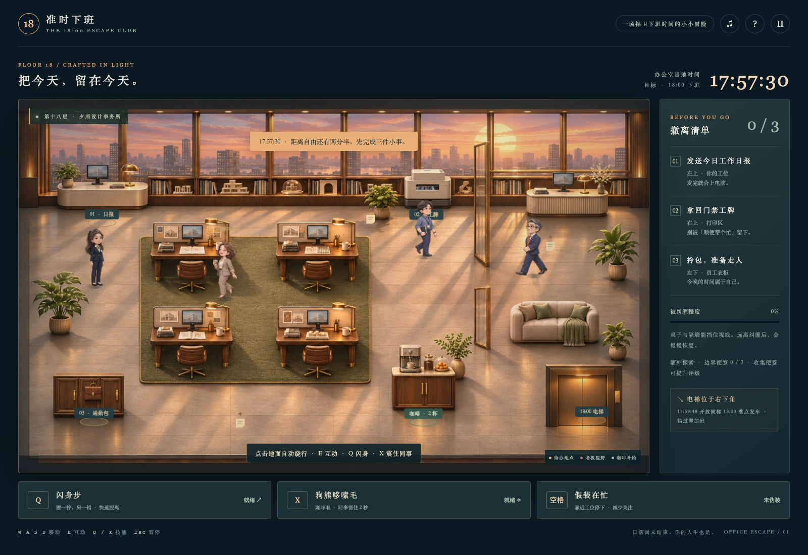
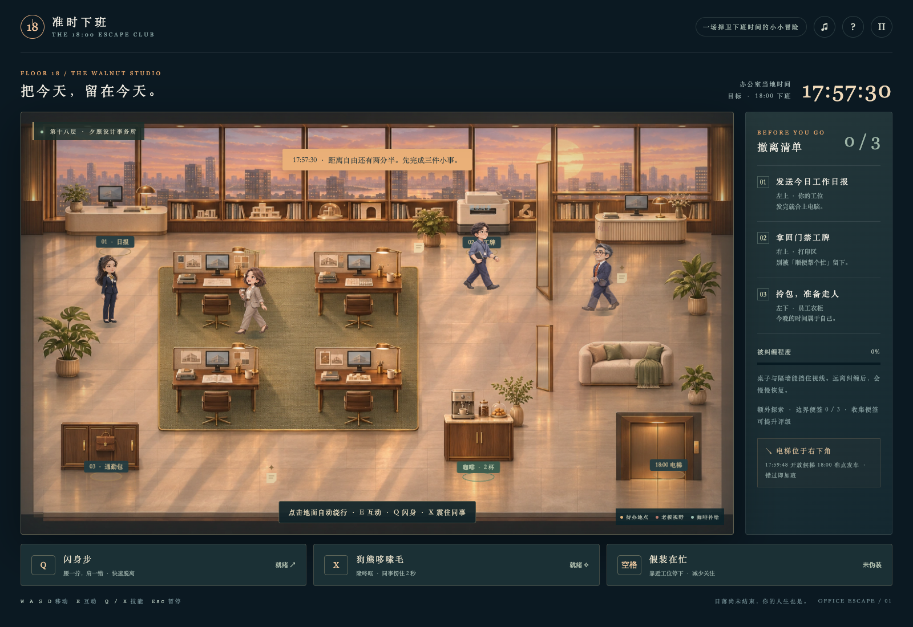

家具厚度与接地关系
强化桌板与圆角、桌脚、椅背、皮革缝线、地毯绒面及软阴影；椅子加入实际碰撞和前后遮挡。
修正叠帧重影，让职业装步伐与家具空间更贴合。


拖动滑块查看同一场景。截图均来自真实浏览器运行，未用原画替代游戏。
强化桌板与圆角、桌脚、椅背、皮革缝线、地毯绒面及软阴影；椅子加入实际碰撞和前后遮挡。
取消相邻帧、姿态及左右人物叠画。保留一张清晰的人物图，用短促收步和轻微重心变化衔接；闪身也不再复制人影。
降低普通移动速度，缩短步幅并匹配脚步节奏；加入随远近变化的比例和方向一致的投影。已重走150秒完整通关。
约十秒无声录像：起步、停步、反向转身、闪身步、哆嗦毛与暂停。是二维序列帧表现，并非骨骼动画。
完整通关26项、专项玩法10项、动作专项16项。实际拦截绘制调用，验证行走、转向和技能每帧只有一个主角实体，人物绘制Alpha始终为1。暂停后画布像素不再变化。原生Safari/iOS、真人步态评价和持续性能仍待实机验收。